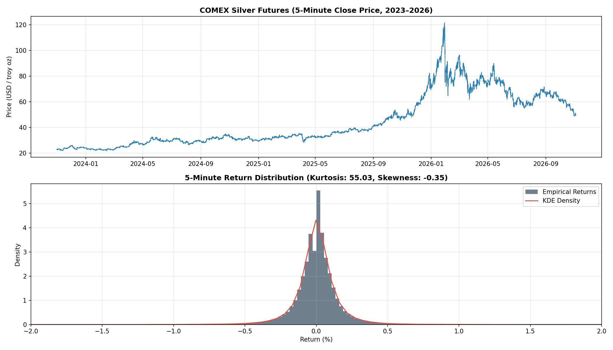
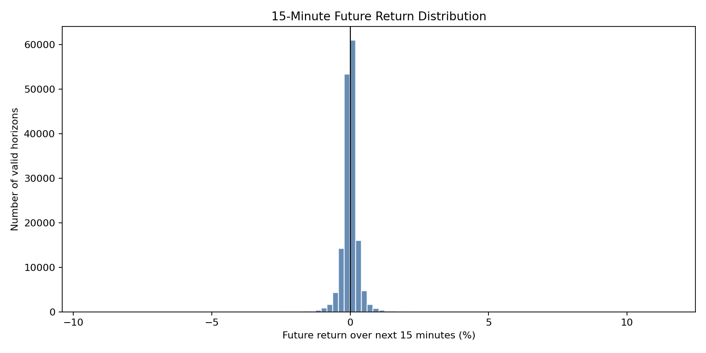
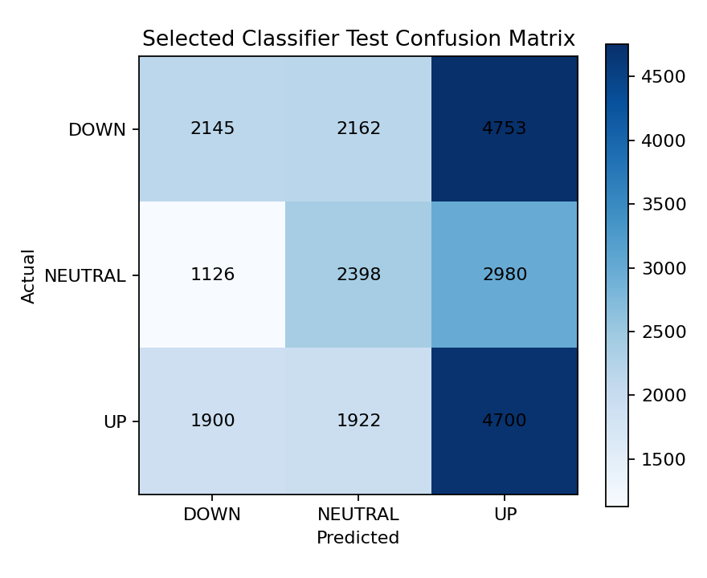
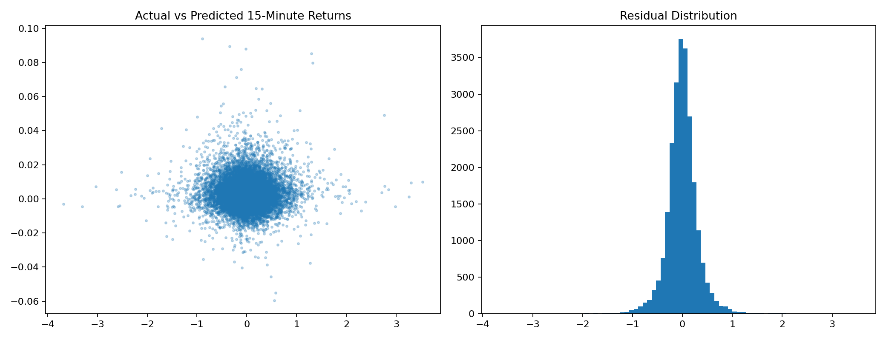

Short-horizon intelligence for COMEX silver
A reproducible pipeline from five-minute OHLCV data to model-backed scenarios, signals, and a connected dashboard.
The problem is a narrow forecast with strict information boundaries
Forecast horizon
Predict the direction and return over the next three consecutive five-minute candles.
Market
COMEX silver futures, using information available at the close of the current candle.
Independent model outputs
A classifier predicts direction. A regressor predicts continuous return. Agreement is not assumed.
Profitability claims
The evaluation is predictive research. Trading costs, slippage, and execution are outside scope.
Local artifacts preserve the research path
Available datasets
- SI_1m_1098d.csv · raw one-minute OHLCV
- silver_5m.csv · five-minute candles
- silver_features.csv · engineered features
- silver_modeling_data.csv · targets included
- SI_daily_roll-adjusted.csv · separate daily context
Quality rules
Loaders preserve rows and columns, parse `America/New_York` timestamps, and report gaps rather than treating session breaks as errors.

The system keeps research and serving responsibilities separate
The same selected artifacts power both the direct Python service and the REST API. The backend caches models after the first request.
Seventeen compact features describe six market dimensions
return_3
return_6
volatility_5
volatility_20
volatility_50
sma_distance_20
sma_distance_50
candle_return
upper_wick_ratio
lower_wick_ratio
relative_volume
volume_change
hour_sin
hour_cos
day_of_week
Causal by construction
Returns, rolling volatility, moving-average distances, candle geometry, volume context, and Eastern-localized time encodings use the current bar and prior bars only.
Research position
The existing literature supports testing these groups. It does not prove that any exact feature is predictive for five-minute silver.
Three consecutive five-minute bars define the 15-minute target
A row is valid only when the next one, two, and three timestamps are consecutive five-minute observations. Rows crossing gaps and the final three rows are excluded.
The continuous target is `future_return_15m`, expressed in percent. Direction labels use a neutral band.

Model selection follows the validation boundary
Candidate families
Classification
Logistic regression · Random forest · Histogram gradient boosting
Regression
Linear regression · Random forest · Histogram gradient boosting
Protocol
Rows are split chronologically into nominal 70% / 15% / 15% partitions. Three rows are purged from the training and validation ends.
Selection uses validation macro F1 for classification and validation RMSE for regression. Test results never select models.
Classification improves over its majority baseline; regression does not beat zero return
| Classification | Selected | Baseline |
|---|---|---|
| Accuracy | 0.38375 | 0.27003 |
| Balanced accuracy | 0.38565 | 0.33333 |
| Macro F1 | 0.37312 | 0.14175 |
| Regression | Selected | Baseline |
|---|---|---|
| MAE | 0.22040 | 0.22018 |
| RMSE | 0.31952 | 0.31940 |
| R² | -0.00084 | -0.00010 |


Two model outputs become evidence, not a forced trade call
Example from the saved models
Direction UP · predicted return 0.006886% · UP probability 42.11% · final signal MIXED. The mixed signal preserves classifier/regression disagreement.
The dashboard exposes the same verified API contract
Live sections
- COMEX silver instrument context
- Latest direction and return
- Class probabilities
- Bullish, bearish, neutral evidence
- Reliability limitations and metadata
Honest empty states
Live price, historical prediction records, and forecast-versus-actual charts show unavailable states because the current backend does not supply those sources.
The refresh action calls the latest-prediction endpoint. New predictions require a valid engineered-feature payload at `/api/predict`.
The result is a verified research prototype with clear next questions
Current limits
- No calibrated confidence module
- No persistent prediction history
- No live market-price feed
- Regression is baseline-level on the test set
- Dataset acquisition provenance is not encoded
Responsible next work
- Calibrate reliability on validation data only
- Add rolling-period and regime robustness checks
- Persist predictions with actual outcomes
- Evaluate costs, slippage, and trading rules separately
- Move target creation into a tested reusable module